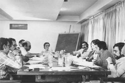

24 de julho de 2026
O repórter de um tempo mau

Plínio Marcos assinou coluna diária no jornal Última Hora e escreveu para tantos outros. Cobria o Carnaval, o futebol, a vida das quebradas. A mesma matéria-prima das peças estava ali, no jornal do dia.
“Eu sempre escrevi em forma de reportagem. As minhas peças não têm ficção, sabe? Eu escrevo, desde Barrela, reportagens.”

Quando a censura fechou os palcos, foi para o papel do jornal e para o livro que ele levou a mesma gente que ninguém queria ver. Reportar era, para ele, um jeito de não deixar ninguém sozinho.
Post de exemplo. O texto entre aspas é de Plínio Marcos, reproduzido do acervo. O restante é editorial, apenas para demonstrar o modelo de post.